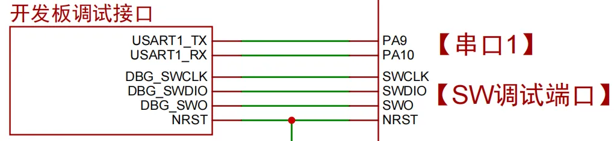
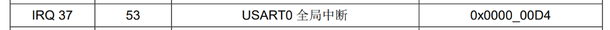
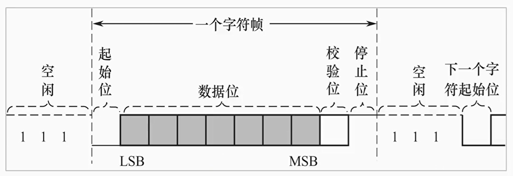

<!DOCTYPE lake>
<h2 data-lake-id="V4WAW" id="V4WAW"><span data-lake-id="ue3dda281" id="ue3dda281">学习目标</span></h2><ol list="u0799a133"><li data-lake-id="u7dc406a5" fid="uf7a26fd1" id="u7dc406a5"><span data-lake-id="uc535073d" id="uc535073d">掌握串口初始化流程</span></li><li data-lake-id="u041e188b" fid="uf7a26fd1" id="u041e188b"><span data-lake-id="u63dc0250" id="u63dc0250">掌握串口接收逻辑</span></li><li data-lake-id="u17184a82" fid="uf7a26fd1" id="u17184a82"><span data-lake-id="udf3cbd18" id="udf3cbd18">了解中断接收逻辑</span></li><li data-lake-id="ud68befb7" fid="uf7a26fd1" id="ud68befb7"><span data-lake-id="u02c35737" id="u02c35737">熟练掌握串口开发流程</span></li></ol><h2 data-lake-id="VfYfV" id="VfYfV"><span data-lake-id="ua4348f7a" id="ua4348f7a">学习内容</span></h2><h3 data-lake-id="Cpbkz" id="Cpbkz"><span data-lake-id="ua6e2a736" id="ua6e2a736">需求</span></h3><p data-lake-id="ub6d48551" id="ub6d48551"></p><p data-lake-id="uf3c8258d" id="uf3c8258d"><span data-lake-id="uce3fd20b" id="uce3fd20b">串口接收PC机发送的数据。</span></p><h3 data-lake-id="RsXPy" id="RsXPy"><span data-lake-id="u385ab8c9" id="u385ab8c9">串口数据接收</span></h3><span class="yuque-card-unsupported">[codeblock]</span><span class="yuque-card-unsupported">[codeblock]</span><h3 data-lake-id="KBf1M" id="KBf1M"><span data-lake-id="ube8de2e4" id="ube8de2e4">中断函数</span></h3><ol list="u4eda11cc"><li data-lake-id="u5a80b4c5" fid="u26da0c5d" id="u5a80b4c5"><span data-lake-id="uafbf9058" id="uafbf9058">中断函数的名称是在CMSIS的汇编接口中定义的</span></li></ol><p data-lake-id="uf8c41410" id="uf8c41410" style="padding-left: 2em"></p><p data-lake-id="u0e8182cc" id="u0e8182cc" style="padding-left: 2em"></p><ol list="u4eda11cc" start="2"><li data-lake-id="udef64fe7" fid="u26da0c5d" id="udef64fe7"><span data-lake-id="uc34e22d3" id="uc34e22d3">中断触发需要进行配置</span></li></ol><span class="yuque-card-unsupported">[codeblock]</span><h3 data-lake-id="lHOzw" id="lHOzw"><span data-lake-id="u1302f2aa" id="u1302f2aa">IDLE中断</span></h3><p data-lake-id="u6a268e7c" id="u6a268e7c"></p><blockquote data-lake-id="uf6bb77db" id="uf6bb77db"><p data-lake-id="uf01c364a" id="uf01c364a"><strong><span data-lake-id="u0d5c51bd" id="u0d5c51bd">当检测到RX引脚空闲(高电平)时间超过传输一个字符帧所需的时间时,产生空闲标志IDLE</span></strong></p></blockquote><h3 data-lake-id="z3BqV" id="z3BqV"><span data-lake-id="ue7e57569" id="ue7e57569">串口接收流程（了解）</span></h3><p data-lake-id="u75fb742c" id="u75fb742c"><span data-lake-id="u90089b33" id="u90089b33">寄存器与电路。</span></p><ol list="u4e02e8c7"><li data-lake-id="ua1e0d295" fid="ue8471711" id="ua1e0d295"><span data-lake-id="u5f361484" id="u5f361484">数据接收缓存寄存器（接收和发送其实公用一个寄存器）</span></li><li data-lake-id="u7a3a09cb" fid="ue8471711" id="u7a3a09cb"><span data-lake-id="u0c6b4bd0" id="u0c6b4bd0">状态寄存器</span></li></ol><p data-lake-id="u00db0a5e" id="u00db0a5e"><span data-lake-id="ufe6feb01" id="ufe6feb01">外部通过串口发送数据到MCU中来时，首先会把高低电平进行转换为单个byte，接着存储到这个缓存寄存器，存储一个byte的时候，会改变寄存器状态，然后会触发中断，我们在中断中，我们就知道接收到了一个byte，我们就可以去数据接收缓存寄存器中取数据，取完后，接收方又去存，这样周而复始的进行接收。直到外部不再发送数据了，这个时候如果长时间（一个字符帧）没有收到数据，就会触发空闲</span><code data-lake-id="ucd67087a" id="ucd67087a"><span data-lake-id="u06c3065a" id="u06c3065a">IDLE</span></code><span data-lake-id="uac26f288" id="uac26f288">寄存器标记。</span></p><h3 data-lake-id="gg2Np" id="gg2Np"><span data-lake-id="ub625d792" id="ub625d792">完整示例</span></h3><span class="yuque-card-unsupported">[codeblock]</span>